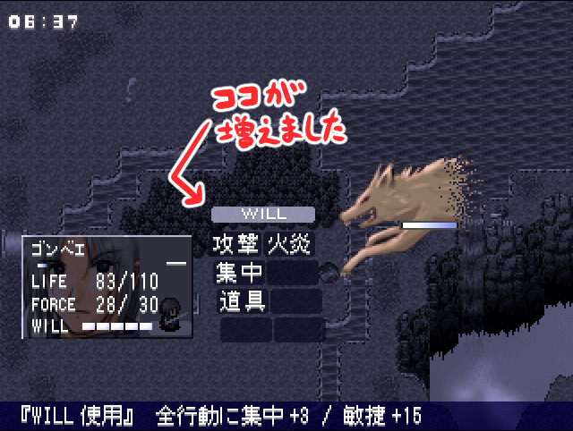
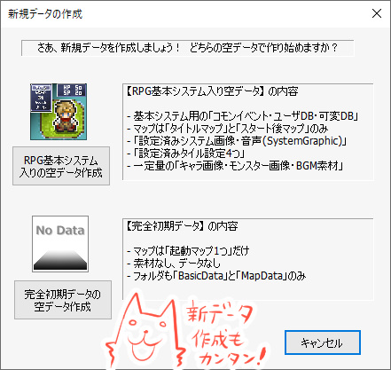

シルバーセカンド開発日誌
2022年12月
■
2022-12-24 (土) シルバーセカンド24周年！▼【シルバーセカンド『24』周年！】
ということで、本サイト「シルバーセカンド」は
2022年12月24日をもって24周年をむかえました！
ここまで長いこと続けられたのも皆さまのお声と手に支えられたおかげです！
いつも本当にありがとうございます！
今回はサンタ風ウルファール（←）と、旅団世界リプレイより天使っ子＆パピオリア氏（→）！
【2022年の成果】
2022年の成果は以下の通り！
●ウディタ大規模修正 ＆ プロ版発売！
構想が固まった今年の6月から、ウディタの修正をガッツリ始めていました！
「いやこれ全部いじるとか無理でしょ！」と思ってたUnicode周りの修正が
なんだかんだでうまくいったり、マップ編集周りのオーバーホールができたり、
挑戦してみてよかったと思える大規模修正でした。
といっても、Unicode周りに関してはこれまでの処理と併存させながら
うまく動かすための仕様をずっと構想してきたおかげもあると思います。
全部うまく動かしながら最小の修正でやる方法を練るのに
ずっと何年もかけてモヤモヤ考えてたんですよ！
それも含めてどこかで1回はやらねばならないことだらけでしたし、
今後の自分の開発や世界展開の効率もアップしますから、
このタイミングでまとめて修正がやれたのは本当によかったです！
●旅団世界TRPGリプレイ3巻発売！


今年の8月に旅団世界TRPGリプレイ3巻『夏の旅団と神秘のカード』が発売されました！
おかげさまで初期目標だった3巻を達成できたので
ここからは不定期でやっていく予定です。
前日譚リプレイ動画もありますので、どんなことをやってるのかが
気になる方は、よければぜひごらんください。
●シルフェイド幻想譚がスマホでプレイ可能に！

記事→ 2022年2月12日の開発日誌
『シルフェイド幻想譚』がゲームアツマールさんにて、
なんと【スマートフォンで】遊べるようになりました！
ゲームアツマールではRPGツクール2000のShiftキーが使えなくなるので
作業としてはそれを修正するのが主でした。
実際にはブラウザゲームとして動作するのですが、
私のAndroidスマートフォン（Pixel4）ではなめらかに動作して
なかなかいい感じでした。
とはいえ、移動方向が完全な十字方向なので
キーボードやパッドで遊ぶ方が遊びやすいのは確かです。
スマートフォンのRPGの操作性について考えさせられます。
そしてなんと超最近、12月20日に悲しいお知らせが！
『ゲームアツマール』さんが2023年の6月28日に
サービス終了してしまうです。そんなー！
といっても収益化が明らかに難しそうで、
ビジネス的に大変そうだったのも分かります。
スマートフォンでひととき遊べるようになっただけでも
幸せな夢が見られたので、非常にありがたかったです。
●画像生成AIが出たので色々検証してみた！
今年の8月に突如一般化した画像生成AI！
私も最初のStable Diffusionでイーリスのファンアートを
作ってみる動画とか作っていましたが、それからたった数ヶ月で、
もうそんなレベルを通り越して最初から
高品質の絵が出せる時代になってしまいました。すごい。
【イーリスのファンアートを作る動画】
ついには私が想定するより何十倍も速いペースで
「画風の再現」までできるようになってしまったので、
使える人はもううまく取り入れて効率化されている感じもします。
私のゲーム用の立ち絵などには（フォーマットが厳しいので）今すぐは
使えなさそうですが、最初から使う前提でお膳立てすれば
AIで自分画風のを出してキャラクター量産などもできるかもしれません。
生きている間に作れるものが増える可能性が広がったので、夢がふくらみます。
（2025年追記：ただこの記事の時点では大きな問題になっていませんでしたが、
生成AIの性能の進歩に伴い、このあと「学習に使用された画像の権利」が
問題視されるようになっていき、2023年以降では創作物に
画像生成AIを使用するのは避けた方がよい状況となっています）
【今年の振り返りと来年の目標】
今年は去年の不調っぷりに比べれば比較的体調よく過ごせた1年でした。
それでもしんどい時間が数年前よりは増えているかもしれないので、
今後も注意深く生活していきたいですね。
そしてAI周りで面白いものがどんどん出てきたので、
自分の能力拡張に使えるよう今後うまく取り入れていきたいとも感じた1年でした。
自然言語AIのChatGPTなどを使ってみた感じ、プログラムについて質問したり
アイデアを広げるのにすごい便利だったりするので
使いこなせると大きな助けになりそうです。
スマートウォッチやスマホに内蔵される会話AIなども近いうちに出そう！
うまくAIと会話する技術もきっと身につけていった方がよさそうです。
上手かつ正確に質問するのも、やはり高い技術が必要になるんですよね。
そしてまた、半年以上ウディタ修正に費やしていたので
今は頭が完全にプログラミング脳になっていますが、
来年はゲーム開発脳に切り替えて『片道勇者2』開発も
バリバリやっていきたいと思います！
Unicode対応で海外展開の土台はできたのでそれも狙っていきたいですね！
【最後に】
2022年も本当にたくさんの人にお世話になりました！
いつも色んな人の助けをいただいていますが、今年は特に、
ウディタの修正やバグ検証にご協力くださった皆さまや、
ご支援くださったみなさまには本当に大きなお力をいただいました。
みなさまのおかげで、自分は今もゲーム開発を続けることができています。
来年も引き続き、できる範囲で全力で各種開発を続けていきたいと思います。
次回の開発日誌は2023年1月1日の元旦に更新予定です！
それでは皆さま、お体にはくれぐれも気をつけて、どうかよいお年を！ ■
2022-12-10 (土) ウディタ3修正づくしの2週間▼【ウディタ3修正づくしの2週間】
ということで、この2週間はずっとウディタVer3のサポートをしていました！
今もほぼ毎日バグ報告が届いていますが、
私が全然気付かなかった問題をご指摘してくださるのはとても助かっています。
皆さま本当にありがとうございます！ ご報告してくださる積極性がすばらしい！
私なんてバグ見つけても自力で回避できる問題ならあまり報告しない派ですが、
開発側としてはバグは早く見つかった方がいいですからねホント！
おかげさまで普通に使う分にはかなり安定度が高まったと思います。
今回はネタもないのでVer3.101までに修正した内容のまとめ紹介！
【新機能】
直しているついでに入れられそうと思った新機能や、
Ver3.00の修正に対して致命的に抜けていると感じた機能を搭載しました。
＜Game＞
●【変数操作+】「位置」指定の画面外エラーを完全に止める裏技を追加
→ Game.exeと同じ場所に、中味は空でいいので「Game_PosErrorStop.txt」という
ファイルを作るとエラー表示を抑制できます。
●【ピクチャ】PictureWatch機能について、ディレイ指定されたピクチャが
「実際に処理されるタイミング」にもデバッグ文として表示される機能を追加
●【DB操作】 CSV保存で存在しないフォルダを指定した場合、
自動でフォルダが生成されるよう修正
●【文字列操作】「をﾌｧｲﾙ↓に出力」コマンドに
「UTF-8/BOM有[基本]」「UTF-8/BOMなし」のオプションを追加。
出力するUTF-8テキストにBOMの有無を設定します。
（なお、過去に入力されたコマンドは「UTF-8/BOMなし」になっています）
→ CSV出力する場合は「BOM有」にしないとExcelで読めません。
といいますか、もっぱらCSVで出力する人用に実装しました。
私も『片道勇者』のリプレイで使ってるのでないと困る！
●【エフェクト】「キャラ」エフェクトに「移動アニメ強制」コマンドを追加。
ONにするとキャラを強制的に「移動アニメ」状態にできます。
→ 主に「～T.png」や「～TX.png」の画像が設定されたキャラの
ピクセル移動中の移動アニメ切り替え用に用意されました。
基本システムVer3.10で「～T.png」や「～TX.png」キャラのピクセル移動にも対応しています。
＜Editor＞
●【データベース画面】DBウィンドウでCtrl押しながらタイプ切り替えでデータ維持できるように
●【マップ編集】マップ編集画面の全体化状態・画面倍率状態が記憶されるように
●【マップ編集】マップ選択ウィンドウの初期位置・サイズが記憶されるように
→ このあたりのマップ関連ウィンドウの一部も記憶が抜けてました。
●【タイルセット設定画面】「最後に選んでいたタイルセット番号」が最初に出るよう修正
→ 実は昔から最終選択番号を記憶するための変数が入ってたのに
うまく機能していませんでした。どうして……
●【新規データ作成】Editor起動時、Dataフォルダがないときに出てくる
新規データ選択画面の正式版を追加。

→ Ver3.0X台では仮版だったのでメッセージボックスで質問が出て
「はい・いいえ・キャンセル」から選ぶ形でしたが、3.1で正式版になりました。
【バグ修正】
もしVer3.0X台で何かお困りだった場合は以下をご参照ください。
もしかしたら修正されているかもしれませんので、その場合は最新版を導入してください。
なかった場合はご連絡いただけると助かります！
（でも簡単に再現できたり、原因箇所が分かりやすいデータがない場合は、
作業優先度が下がったり、再現しやすいデータを待ったりする場合がありますのでご容赦ください。
クラッシュ系は原因が分かりにくくてもデバッガですぐ捕まえられることが多いので、クラッシュ再現できるデータは大歓迎です）
＜Gameのバグ修正＞
●【エフェクト】 ピクチャに「角度」を指定している状態だと、
ピクチャエフェクトの「ズーム」が正常に機能しなくなっていたバグを修正
●【変数操作+】 ルビ付きの文字列ピクチャに対して「ピクチャ」の
「画像サイズ（横）」を取得するとルビなしと違う値が出るバグ修正
●【変数操作+】画面外を指定して出るエラーは「テストプレイ時」のみ
「最初の1回だけ」出るように修正(Ver3.02まで)。
●【ピクチャ】ファイル名末尾に_LOOPを付けた動画がループ再生されないバグを修正
●【変数操作+】 「位置」指定の画面外エラーを止める裏技を作っておきました。
1. Game.exeのある場所で右クリック→新規作成→テキストドキュメント でテキストを作成。
2. 1のファイルを「Game_PosErrorStop.txt」に名前変更し、Game.exeと同じ場所に置く。
3. この状態でテストプレイすると、「変数操作+」の「位置」エラーを最初から抑制できます。
●【動作指定】キャラの「動作指定」時のマップセルフ変数の読み込み先が
間違っていたバグを修正
●【エフェクト】ゲーム基本設定で移動幅を「1マス」に設定している状態で
ピクセル移動をすると当たり判定がおかしくなるバグを修正
●【特殊文字】ルビ\r[X,Y]の表示速度が変則的になっていた現象の修正を試みました。
●【キャラの上下描画判定】ループ際の挙動などに問題があったため処理全体を作り直しました。
もし大きな問題が出ていた場合はいったんVer3.05をご利用ください。
※なおプロ版で「ループ有り」マップ、かつ「ズームアウト」すると相変わらず
マップイベント表示の動作が極めて不安定になりますのでご注意ください。
●【マップチップ】▲チップの裏側のキャラチップがスクロールのたびに
チップに隠れたり表示されたりする現象を修正。
●【エフェクト】ピクチャ番号がマイナスのピクチャに対して、エフェクトの「色調変更」で
RGB値を99以下にしたとき反映されていなかったバグを修正。
前の仕様で作っていた方もおられると思いますので、その場合は「ゲーム基本設定」の
「Game.exe動作バージョン調整」を「旧Ver3.00以前の挙動」に変えると
前の挙動のままにできます。
●【変数操作+】エフェクトの「ピクセル移動」を使用して移動させた場合、
キャラの「移動中？」取得が機能していなかったのを修正。
±1ピクセル以上移動できた場合に1を返します。
●【イベント制御】 「キャラ動作指定」で「パターン1～5」を実行しても
反映まで15フレームほど遅れるバグを修正。
すでにこれに合わせて作っていた方もおられると思いますので、
前の挙動のままにしたい方は「旧Ver3.00以前の挙動」に変更してください。
●【システム変数】 「Sys26：選択肢ｳｨﾝﾄﾞｳ X余白」の選択肢余白を入れた分だけ
選択肢ウィンドウが右にずれていってしまうバグを修正。
●【エフェクト】 主人公の『重ねキャラチップ変更』で変更した状態でセーブすると
ロード時にクラッシュするバグ修正
●【エフェクト】スクロールできない画面端が映るようにマップエフェクトのシェイクをすると
画面外が映るタイミングで全てのマップチップが消えて真っ暗になる現象を修正
●【Game.exe】条件は不明ですが高確率で致命的なクラッシュを引き起こす要因が
見つかったので修正してみました。
●【システム文字列・プロ版】 ゲーム内から初回「SysS57：[P]クリップボード内容」に代入しても
読み取り文字列が<<StartClipBoard>>のまま変わらないバグを修正
●【システム文字列・プロ版】 「SysS57：[P]クリップボード内容」の文字列が
Unicodeになっていなかったバグを修正。
●【エフェクト】 マップの端で「マップ」エフェクトすると
瞬間的にマップ画面が黒くなることがあるバグを修正
●【変数操作+】 ピクチャの「マウス重なってる？」の判定が内部的に
1フレーム前のピクチャ座標を使用していたのを修正。
●【DB操作】 CSV保存で存在しないフォルダを指定した場合、自動でフォルダが生成されるよう修正。
●【データベース】データベース内に「×NoData」が多数ある状況でゲームを起動すると、
まれにクラッシュする可能性があるバグを修正
●【デバッグ文】PictureWatch機能について、ディレイ指定されたピクチャが
「実際に処理されるタイミング」にもデバッグ文として表示される機能を追加
●【プロ版機能（プロ版）】PNGスクリーンショットの撮影処理が透過PNGになっていたバグを修正。
いつものPrintScreenで撮れるものと同じにしておきました。
●【システム変数】マップ拡大率100％以外の状況で「Sys122:Map&Evｽﾞｰﾑ時なめらか化(1=YES)」に
1を入れるとタイルの隙間が見えてしまうバグを修正。
ただ隙間の黒い空間はなくなっても隣のチップの色が映り込んでしまうので、
この機能自体は実用的ではない気がしました。「α版」と付けておきます。
●【システム変数】Sys122:Map&Evｽﾞｰﾑ時なめらか化(1=YES) の名前を
Sys122:Map&Evｽﾞｰﾑ時なめらか(1=YES)[α版] に変更
●【デバッグ文】Ver3.082のデバッグ文の修正でデバッグウィンドウを出しながらの
ピクチャ処理時にクラッシュすることがあるバグが出ていたのを修正
●【PNGファイル読込】一部の昔のツールで軽量化したPNG画像を
読み込んだ際に起きる不具合が修正されました。
（ライブラリ作者様に対応していただきました、ありがとうございます！）
●【マップイベント】マップイベントとしてタイル画像を設定したとき、
指定した画像と違うものが表示されることがあるバグを修正
●【文字列操作】 裏技の<<GET_STRING_WIDTH_COUNT>>の
全角英数字と全角記号が1バイトとして認識されるバグを修正
●【文字列操作】 裏技の<<GET_STRING_WIDTH_COUNT>>で
Tab文字コードをカウントさせるとクラッシュするバグを修正。
Tabコードのようにカウントできない文字は0として処理されます。
●【文字列操作】「↓のﾌｧｲﾙをBase64で読込」を繰り返すと
メモリ溢れする可能性があったバグを修正
●【文字列操作】 裏技の<<GET_STRING_WIDTH_COUNT>>において
全角記号￠がまだ半角（1）分として認識されるのを修正
●【起動時】使用したGame.exeのバージョンがEditorのバージョンより
古い場合に出る初期エラーメッセージが文字化けしていたのを修正
●【ゲーム基本設定】 使用フォントをすべて空欄に設定した状態でセーブ＆ロードすると、
デフォルトフォントがMeiryoからMSゴシックに変わるバグを修正
●【暗号化データ】暗号化データ使用時に強引にテストプレイすると出てくる
Log.txtにてメモリリークが検出されるのを修正
（ライブラリ作者様に対応していただきました、ありがとうございます！）
●【フォント】ロード時に特定のフォントがMeiryoに変わってしまうことがあるバグを修正
＜Editorの修正＞
●【エフェクト】エフェクトコマンド入力欄、「画面のスクロール」内の「上」が
見えなくなっているのを修正
●【コマンド入力ウィンドウ】コマンド順を並べ替えている場合、イベント挿入などの
コマンドウィンドウを開いた時になぜか常に文章の表示が最初に出てきて
1番目のコマンド内容と混ざった表示になってしまうバグ修正
●【マップエディタ】 マップが選ばれていない状態でテストプレイを開始しようとすると
マップファイル保存ダイアログが表示されてしまう現象を修正
●【翻訳DLL】「Editor.lang.dll」がうまく読み込まれなくなっていたバグを修正
●【マップエディタ】タイルサイズが正しくないときのエラー文の選択肢表記の中の
「ゲーム解像度を変更する」表記を「タイルサイズを変更する」に修正
●【マップの基本設定】ファイル名の欄で、マップのファイル名の末尾がmかpかsだと
その文字だけ表示されなくなっていたバグ修正。
●【表示スケール】表示スケールが100％以外のときのレイアウト崩れや座標ズレの修正を試みました。
対象は「起動時バナー」「ツールバーアイコン（1.5倍、2倍に変化。ただし今は画像ガビガビ）」
「場所移動先の選択画面ズレ」「画像選択画面のクリック位置ズレ」
「タイル選択時のクリック位置ズレ」です(Ver3.070)
●【場所移動】移動先を選択する画面で環境によってマップが枠外にはみ出ていることがあるバグを修正(Ver3.070)
→ Ver3.071追加 マップの端が選びにくくなっていたのを修正
●【タイルセット設定画面】「最後に選んでいたタイルセット番号」が最初に出るよう修正
（前回「OK」で終了していた場合のみ）
●【データベース】データベースのメモ欄が15行以上になった場合だけ縦スクロールバーが
表示されるよう修正（メモ欄の横幅が広く使えるので、
Ver3から必要ないときはスクロールバーが非表示になります）
●【コモンイベント編集時】 起動直後、コモンイベント編集時に0番以外のコモンイベントに
切り替えてイベントコマンド入力【変数操作+】を開いたとき、
コモンセルフ変数名がコモンイベント0のコモン変数名になっているバグを修正。
●【複数指定画面】コモンイベントの複数コピー画面などで「-1」を入力すると
クラッシュするバグを修正
●【コンバート】コンバート後のデータでエディタがクラッシュする可能性がある要因を修正。
●【イベントエディタ(プロ版)】 WoditorEvCOMMAND_START ～の文字列によるコード貼り付け処理の
文字コードがSJISになっていたのをUnicodeに修正。
（ハートマークなどが入りませんでした）
●【起動処理(プロ版)】Editor.iniにプロテクトキーが記述されているのに
Game.datに暗号化がかかってない場合、起動時にメッセージが出るよう修正。
一部の基本ファイルだけにプロテクトがかかってしまう問題をさけるためです。
●【エディターメイン部(プロ版)】起動時とマップ・マップイベントが編集された状態だと
タイトルバーの『WOLF RPGエディター PRO』の"PRO"表記が消えるバグを修正
●【コモンイベントウィンドウ】変数の数を多くするとコモンイベントエディタ上で
コモンイベントを切り替えたときに時間がかかるようになってしまっていたのを修正
●【ゲームデータ作成】 コピー対象外とするデフォルト拡張子に.clipと.lnkを追加。
●【場所移動】「移動先を見ながら選択」画面でスクロールするとチラ付く問題を修正
●【マップ選択】「マップ選択」ウィンドウの位置が、前回終了時と同じ場所・サイズで配置されるよう修正
●【マップ編集ウィンドウ】前回終了時のマップウィンドウの最大化状態を記憶するよう修正
●【マップ編集ウィンドウ】前回終了時のマップの表示倍率を記憶するよう修正
●【エディターメイン部】ツールバーアイコンを少しだけ調整
●【タイルセット設定】表示スケールが100％以外のときのタイルセット設定で
下部の表示がおかしくなったり通行設定が表示されなくなるバグを修正
●【データベース設定】タイプ設定で文字列の項目を挿入・削除した場合、元々格納されていた
文字列内容がずれてしまうバグを修正（数値では起きませんでした）。
●【複数データ選択】 コモンイベント複数コピーなどデータ範囲を指定する画面で
自動的に数値補正が入る処理を削除しました。
●【画像選択】 マップイベントの画像選択画面などで、画像がないところをダブルクリックしても
「OK」されてしまうバグを修正。
●【マップ選択】 大きいマップがスクロールされた状態で別の小さいマップへ
マップを切り替えたとき、前マップのチップが残ることがあるバグ修正
●【データベース】データを削除したときなどにデータがスクロール中央に来なくなっているバグを修正
●【マップチップ選択】 タイル画像の外を選択すると変な選択のしかたになってしまうバグを修正
●【エディターオプション】「旧ファイル読込言語」の言語の順序が、
実読み込み時に出てくる言語と違っていたのを修正
●【データベース】データ消去時のスクロール挙動をVer3.08以前と同じようになるよう修正
●【データベース】Ctrlを押しながらタイプを切り替えた際、
同じデータ番号を選んだままタイプ変更できるよう修正
●【DB特殊設定(プロ版)】テーマカラーをパーフェクトダークにしたまま
DBの特殊設定を開くと文字が黒のままで一部読めなくなるバグを修正
●【ピクチャ】 自由変形時、コマンド一覧で基準座標が「中央上」と出ていたのを「中央」に修正
●【総合】プロ版と無料版を切り替えたときにエディター起動中の警告が出る現象を修正
●【起動時】新規データを作成するとクラッシュするバグ
●【条件(変数)】 コマンド入力欄のセルフ変数の表示が初回のみ異なる現象を修正
●【キー入力】 コマンド入力欄のセルフ変数の表示が初回のみ異なる現象を修正
＜基本システムの修正＞
●Ver3.09 システム画面の「変更を保存して終了」時の音が2重になっていたのを修正
[コモン132/66行にあった決定音を削除]
●Ver3.10 ピクセル移動処理の「待機アニメON/OFF」を
全てエフェクト「移動アニメ強制 ON/OFF」に変更
[コモン39/「Ver3.10でエフェクトに変更↓」で検索可]
以上です！ まとめるとけっこう多い！
こんな感じで、引き続きいただいたバグの修正続行中です。
【おまけ】
12/24にシルバーセカンドは24周年を迎えます！
余裕がなくて今年は生配信などやっていませんでしたが、
私が元気そうなら今年12/24に1年を振り返る生放送をやりたいと考えております！
今年は半分以上ウディタの修正ばっかりだったので
その話ばかりになるかもしれませんが！
Youtubeチャンネルも持ってますので、
もしよければチャンネル登録お待ちしております！
登録しておくと配信予約を入れたときなどに通知されるそうです。
↓
【SmokingWOLF Youtubeチャンネル】 2022年12月
Copyright © SmokingWOLF / Silver Second
 カテゴリ: 開発日誌
カテゴリ: 開発日誌 カテゴリ: 開発日誌
カテゴリ: 開発日誌